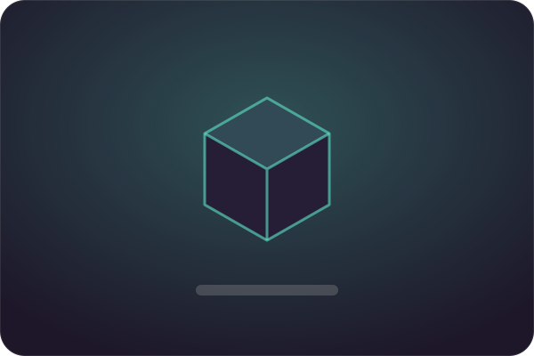

Плавний зум
Наближення з плавною анімацією та налаштовуваною клавішею.
Second Visuals збирає візуальні покращення в один клієнт. Нічого не треба шукати, сумістити й налаштовувати вручну.

Обери пресет — «Ранок», «Захід сонця» чи «Ніч» — і світ одразу змінюється. М'які тіні, об'ємні промені та туман без складних меню.
Перероблені частинки ударів, руйнування блоків і зілль. Плавні анімації рук і перемикання предметів роблять гру живішою.
Мінімалістичні шкали здоров'я та голоду, округлий хотбар і меню. Розташуй кожен елемент там, де тобі зручно.
Дрібниці, які роблять клієнт зручним щодня.
Наближення з плавною анімацією та налаштовуваною клавішею.
Вільна камера, приховування HUD і знімки екрана у високій якості.
Плащі та прикраси для персонажа — частина доступна в Преміумі.
Ефекти оптимізовані, щоб гра лишалася плавною навіть на ноутбуках.
Fabric, мод і оновлення встановлюються самі. Ти просто натискаєш «Грати».
Окремі профілі для PvP, будівництва чи скріншотів — перемикайся за секунду.
Більшість ефектів доступні одразу. Преміум — для тих, хто хоче ще більше.